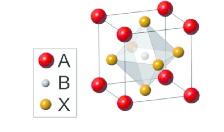

Search for a better perovskite solar cell using ML
Sharun P Shaji (1711125)
Sreerag T K(1811158)
Project Proposal
Introduction
Solar cells are the future of energy, existing technology is based on silicon or germanium the so-called conventional semiconductors. They are
very hard to manufacture as well as it's very expensive to fabricate. Perovskite can replace this if we use
Perovskite instead of conventional semiconductors, it'll drastically reduce the effort for making solar cells.
The Perovskites are crystals with a specific crystal structure given by,
$$ ABX_{3} $$

A & B are cations, and
X is an anion. So, we can see that there can be an enormous number of combinations which yields a Perovskite crystal,
but it's impossible to try all these combinations are get the properties that we need.
In this project, we are concentrating on bandgap energy denoted by Eg , which determines the efficiency
of the solar cell, and the color of light emitted if used as a LED. We also want to find a substitute of Lead (Pb),
which is the B cation in most of the Perovskites we are using today. I think I don't need to explain why because we all
know that Pb is a heavy metal and the environmental issues it causes. On a side note, from the Perovskite solar cells,
the Pb which reaches the ground is not at all significant it's similar to how much Pb we will get exposed if we are
walking on an asphalt road barefoot. Hence finding Pb-free Perovskite is not an immediate goal.
Goals
Our main objective is to find the best possible combination of materials that makes a better
candidate for a Perovskite based solar cell or a LED . For this project, we are only concentrating on the solar
cell, if time permits we'll also work on the LED. To attain the main goal we have to complete
some milestones which are listed below,
- Make a big enough data set by going through literature and the data used in some of the references (data set consists of properties of elements and Eg will
be the label
- Find out which features to use. (feature engineering)
- Train the machine to predict the label, which is Eg. (Neural Network and Linear regression)
- Then try all possible combinations and come up with the closest to the desired value of Eg
By midway we are hoping we will be able to start on woking on training the machine to
perdict the Eg
Work Distribution
There are five core tasks in the common ML workflow :-
- Getting Data
- Clean, Prepare & Manipulate Data
- Train Model
- Test Model
- Improve
For Training and Testing the data we will be focusing on two class of Algorithms, Linear Regression and Neural Networks. Here Neural Network(ANN) part will be done by Sharun and the Linear Regression part will be done by Sreerag. And and for the rest we will be doing them together
References
- Bandgap tuning strategy by cations and halide ions of lead halide perovskites learned from machine learning
- Machine learning bandgaps of double perovskites
- Machine learning for perovskite materials design and discovery
- Identifying Pb-free perovskites for solar cells by machine learning